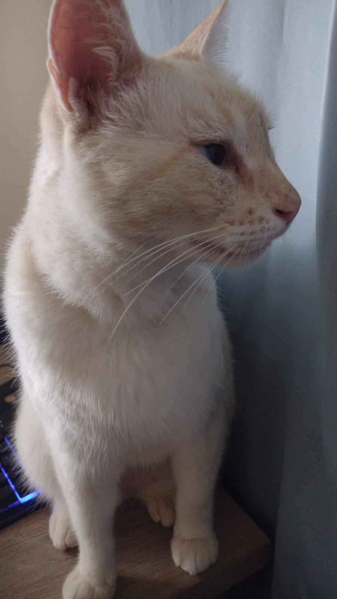
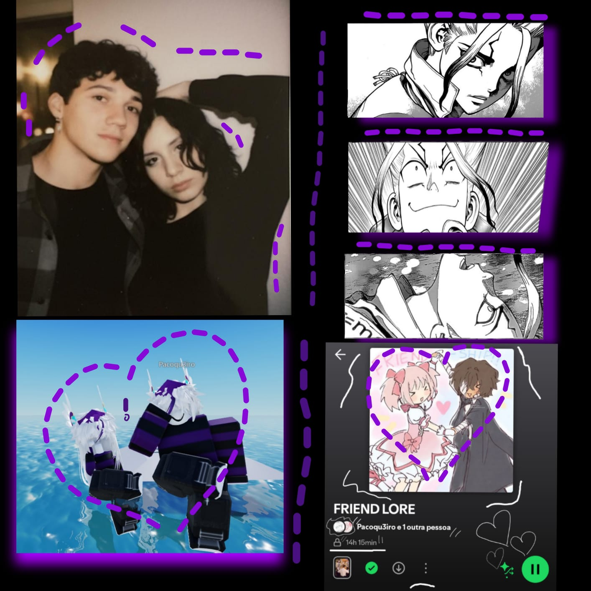
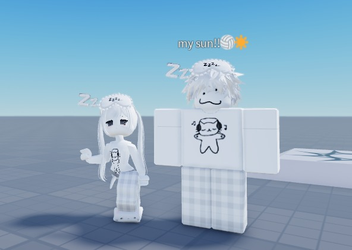
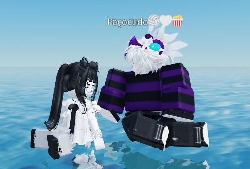
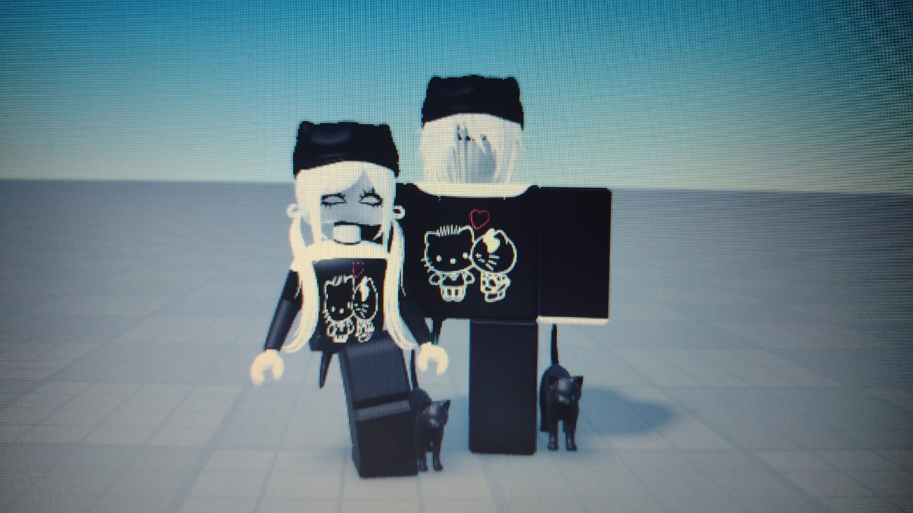
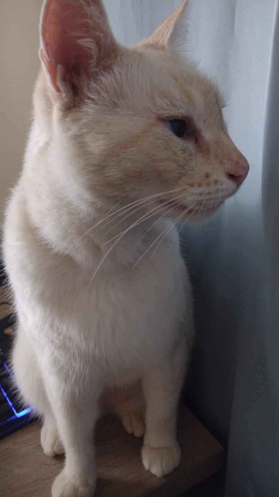
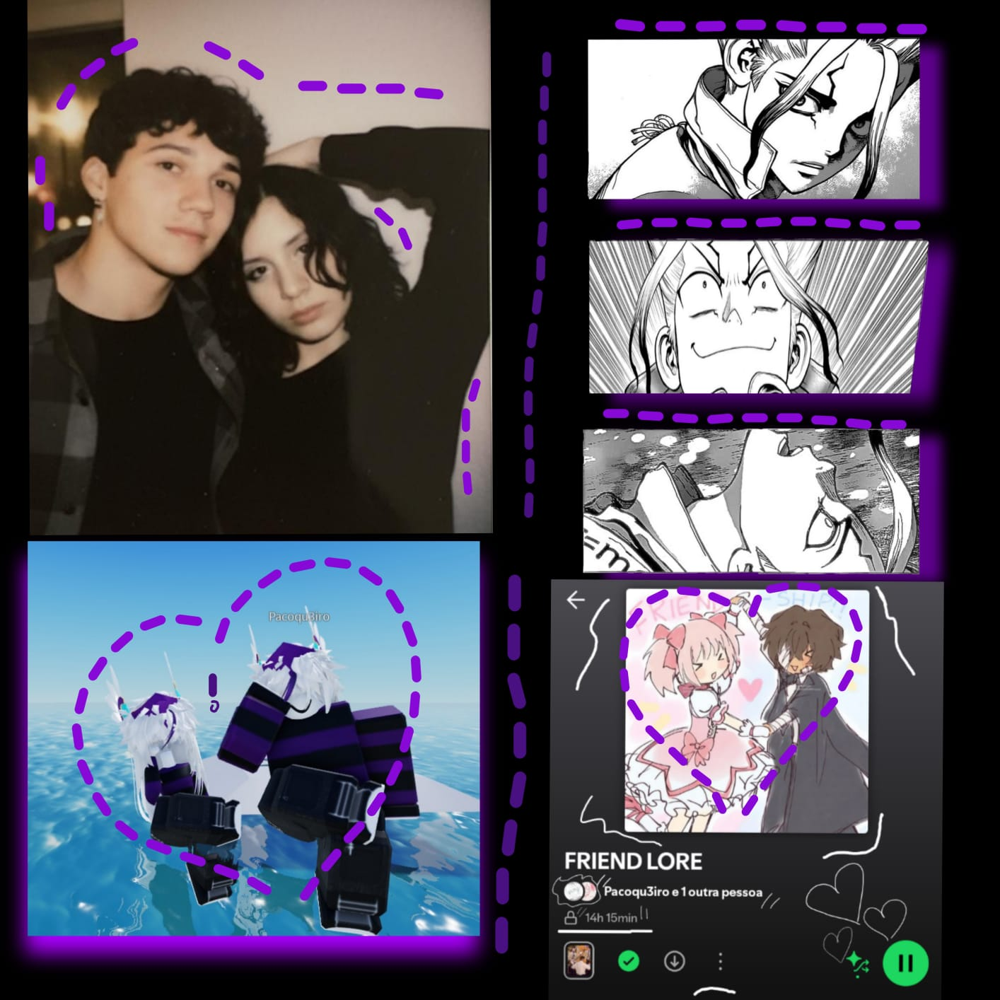
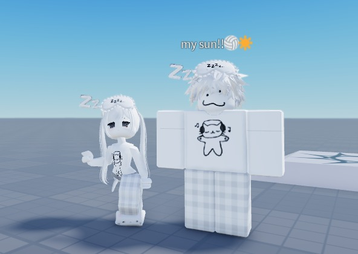
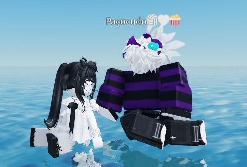
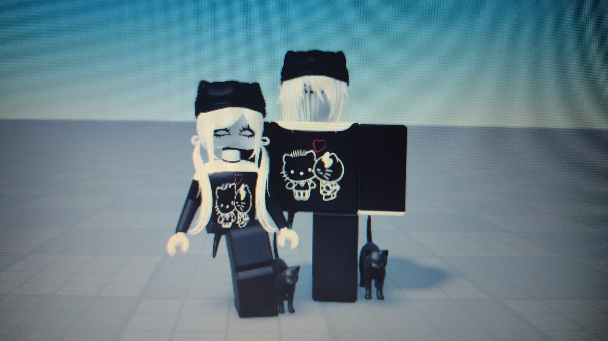

Oi, amor. Acabei fazendo mais umas coisas aqui, pretendo colocar muito mais coisas e tentar manter este lugar até o dia que a gente de fato brige de uma forma "séria" de verdade, eu espero que você me perdoe e que a gente tente voltar tudo, eu mexi e organizei aqui por agora, mas vou tentar colocar MUITOOOOO mais coisas!, EU TE AMO!.
"Opa, dei uma organizada aqui.
Obrigado por estar aqui sempre, pelas ajudas e os apoios,
as conversas e as brigas, as discussões e as brincadeiras."
Não é muito, mas é de coração. Cada pedacinho deste lugar foi pensado em você, em algo que eu imaginei que fosse te agradar e te deixar alegre.
Eu te amo! isso foi feito para te confortar apenas.

 








